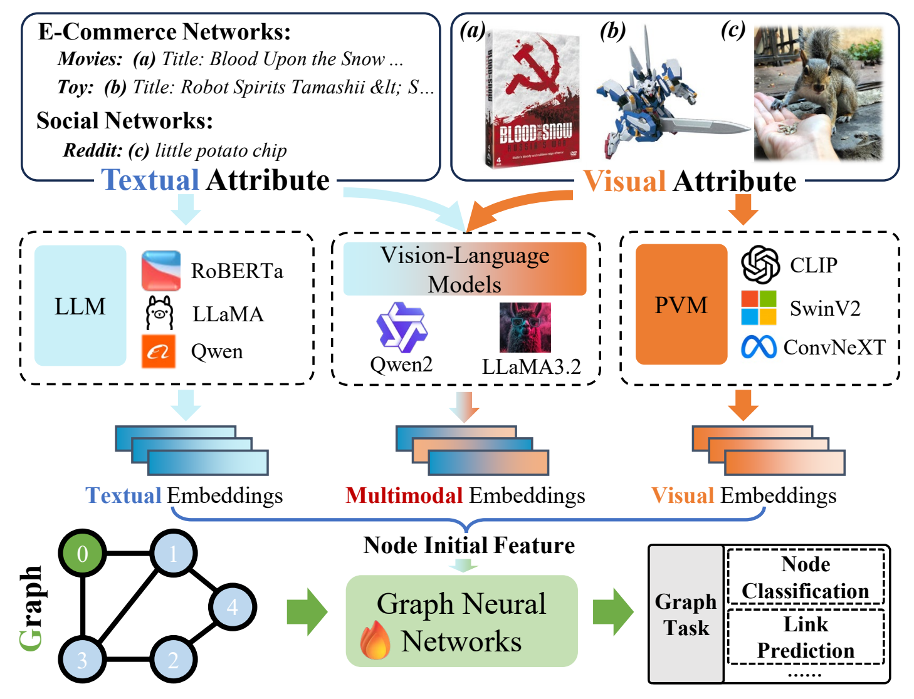

KDD 2025CCF-A
When Graph Meets Multimodal: Benchmarking and Meditating on Multimodal Attributed Graph Learning
Five multimodal graph datasets and a unified evaluation of GNN-as-Predictor and VLM-as-Predictor, examining how domain, modality imbalance, and graph retrieval affect prediction.